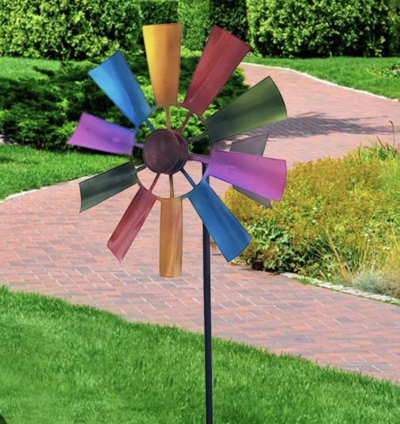
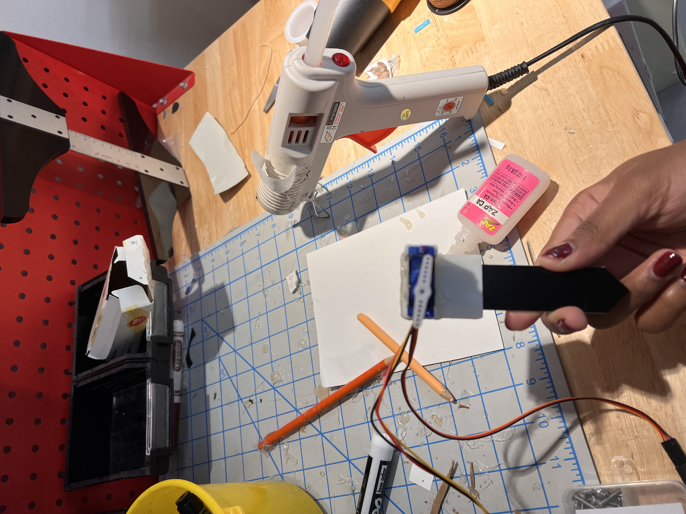
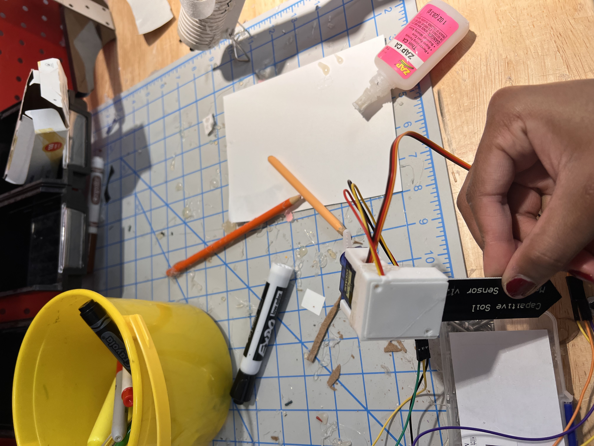

I cannot keep houseplants alive! Indoors or outdoors I don't know when they need more water, so I plan on making something to help me out here :)
I will print a case to protect the top of the soil sensor
and something to hold the servo in to glue it to the sensor
+ hopefully something that looks like this to decorate the servo
I used a piece of fabric to wrap around the moisture sensor, then dampened it as necessary to get readings
Using the 3D printer proved more of a nuisance than helpful in this case, especially for parts so small. The servo is tiny, so the movements aren't extremely noticeable without a decorative flag-like piece on it.
 You can see the arm on the servo rotate with a change in moisture